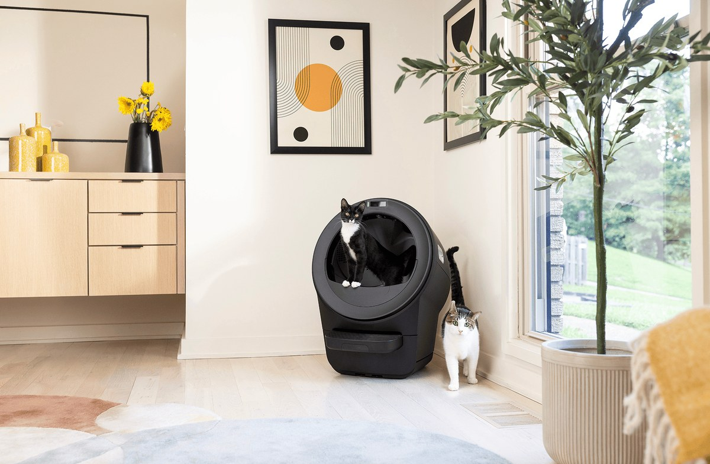

Whisker Litter-Robot 5
MANUFACTURER: WHISKER • FORM FACTOR: ROTATING GLOBE • STATED WEIGHT: 3-30 LBS (UP TO 5 CATS)
The Litter-Robot 5 utilizes a rotating globe sifting architecture with lower waste drawer deposit. Published specifications report a 15.75" x 15.75" entry opening and multiple laser plus weight sensor technology.
Rotating Globe & Entry Dimensions
The Litter-Robot 5 features Whisker's enclosed rotating globe architecture designed to sift standard clumping litter into a sealed waste drawer beneath the unit.
- Entry opening dimensions published at 15.75" x 15.75".
- Stated cat weight limits accommodate cats from 3 to 30 lbs, with stated support for up to 5 cats.
- Footprint measures 22" x 27" with a height of 29.9"; unit weighs 28.7 lbs empty.
Laser & Weight Sensor Safety Array
Manufacturer specifications indicate Class 1 laser product classification alongside multi-tier detection mechanisms.
- Multiple lasers detect entry into the globe opening during standby and operation.
- Weight sensor technology measures individual cat weights and verifies occupancy.
- Operating sound level dB rating is not published; manufacturer notes QuietSift technology minimizes noise.
Whisker Litter-Robot 5 vs Alternatives
Compare published manufacturer specifications across enclosed globe and open-top models.
| Specification | Litter-Robot 5 (Whisker) | Neakasa M1 (Neakasa) | PETKIT Purobot Max Pro 2 (PETKIT) |
|---|---|---|---|
| Design Form Factor | Enclosed Rotating Globe | Open-Top Sifting Basin | Enclosed Rotating Cylinder |
| Entry Opening Dimensions | 15.75" x 15.75" | Entry height 13.86"; width/depth not stated | 10.51 x 10.74 in; entrance height 10.03 in |
| Stated Cat Weight Limits | 3–30 lbs, up to 5 cats | 2.2–33 lbs | 3.3–22 lbs |
| Waste Bin Capacity | Up to 10 days (one cat); volume not stated | 11.23L bin; about 14 days for one cat | 8L bin; up to 17 days (one cat) |
| Safety Sensor Architecture | Multiple lasers + weight sensor technology (Class 1 laser product) | Infrared + 4 weight sensors* | 12 integrated safety sensors |
| Stated Sound Level (dB) | dB not stated; page says QuietSift technology minimizes noise | 50 dB | 35 dB |
| Manufacturer Warranty | 1 year included; optional 3-year plan listed at $100 | US/Canada: 1-year limited; EU/UK: 2-year | 2 years (from image alt text; terms not on page) |
| Footprint / Dimensions | 22" x 27" footprint, 29.9" high; 28.7 lbs empty | Not stated by manufacturer (22.81 lbs empty) | 25.86 x 21.18 x 23.74 in |
| MSRP / Pricing | As low as $799 (LR5 Pro: as low as $899) | $379.99 (M1 Plus)* | $499.99 sale (regular $599.99) |
| Product Profile Link | Current Profile | View Neakasa M1 → | View Max Pro 2 → |
Primary Manufacturer Source Links:
- Whisker: Whisker Litter-Robot 5 Official Product Page
- Neakasa: Neakasa M1 Official Product Page
- PETKIT: PETKIT Purobot Max Pro 2 Official Product Page
Verification & Notes: Specs read from manufacturer pages on Oct 9, 2026.
• Litter-Robot 5 Sound: dB rating not published by Whisker; manufacturer page notes QuietSift technology minimizes noise.
• Litter-Robot 5 Warranty: 1 year standard included; optional 3-year WhiskerCare warranty listed at $100.
Affiliate Disclosure: Whisker Litter-Robot 5 is included strictly as an uncompensated reference standard. Links to Neakasa and PETKIT are partner links that may earn an affiliate commission at no additional cost to you.
Detailed Technical Specifications
Specifications compiled from manufacturer technical publications read on Oct 9, 2026.
| Brand & Model | Whisker Litter-Robot 5 |
| Operating Architecture | Rotating enclosed globe with automatic gravity separation |
| Exterior Footprint / Dimensions | 22" x 27" footprint, 29.9" high; 28.7 lbs empty weight |
| Globe Entry Opening | 15.75" x 15.75" |
| Stated Cat Weight Limits | 3–30 lbs, up to 5 cats |
| Waste Drawer Capacity | Up to 10 days for one cat (volume not stated) |
| Safety Sensor Array | Multiple lasers + weight sensor technology (Class 1 laser product) |
| Stated Sound Level | dB not stated; QuietSift technology minimizes noise |
| Litter Compatibility | Standard clumping clay cat litter |
| Warranty Terms | 1 year included; optional 3-year plan listed at $100 |
| Retail Pricing (MSRP) | As low as $799 (Litter-Robot 5 Pro: as low as $899, adds dual camera) |
Questions & Answers About Litter-Robot 5
What are the entry opening dimensions for Litter-Robot 5?
Whisker states an entry opening measuring 15.75" by 15.75" for the Litter-Robot 5.
What safety sensors are integrated into Litter-Robot 5?
The Litter-Robot 5 uses multiple lasers and weight sensor technology, certified as a Class 1 laser product, to halt rotation whenever cat entry is detected.
What is the difference between Litter-Robot 5 and Litter-Robot 5 Pro?
Manufacturer product listings show Litter-Robot 5 starting as low as $799, while the Litter-Robot 5 Pro starts as low as $899 and adds dual camera capabilities.
Compiled by Clowder Research Team
Our product profiles synthesize publicly published manufacturer engineering specifications, patent filings, user manual safety warnings, and public customer community documentation. We maintain strict editorial transparency: we do not conduct laboratory testing ourselves and provide clear citations to official portals.